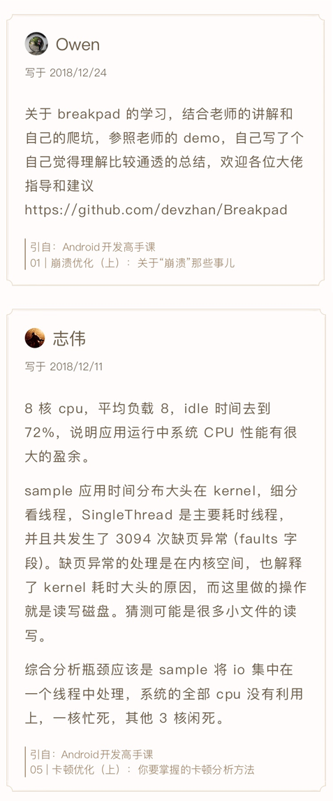

你好，我是孙鹏飞。
在专栏卡顿优化的分析中，绍文提到可以利用 JVM TI 机制获得更加非常丰富的顿现场信息，包括内存申请、线程创建、类加载、GC 信息等。
JVM TI 机制究竟是什么？它为什么如此的强大？怎么样将它应用到我们的工作中？今天我们一起来解开它神秘的面纱。
JVM TI 介绍
JVM TI 全名是Java Virtual Machine Tool Interface，是开发虚拟机监控工具使用的编程接口，它可以监控 JVM 内部事件的执行，也可以控制 JVM 的某些行为，可以实现调试、监控、线程分析、覆盖率分析工具等。
JVM TI 属于Java Platform Debugger Architecture中的一员，在 Debugger Architecture 上 JVM TI 可以算作一个 back-end，通过 JDWP 和 front-end JDI 去做交互。需要注意的是，Android 内的 JDWP 并不是基于 JVM TI 开发的。
从 Java SE 5 开始，Java 平台调试体系就使用 JVM TI 替代了之前的 JVMPI 和 JVMDI。如果你对这部分背景还不熟悉，强烈推荐先阅读下面这几篇文章：
虽然 Java 已经使用了 JVM TI 很多年，但从源码上看在 Android 8.0 才集成了 JVM TI v1.2，主要是需要在 Runtime 中支持修改内存中的 Dex 和监控全局的事件。有了 JVM TI 的支持，我们可以实现很多调试工具没有实现的功能，或者定制我们自己的 Debug 工具来获取我们关心的数据。
现阶段已经有工具使用 JVM TI 技术，比如 Android Studio 的 Profilo 工具和 Linkedin 的dexmaker-mockito-inline工具。Android Studio 使用 JVM TI 机制实现了实时的内存监控，对象分配切片、GC 事件、Memory Alloc Diff 功能，非常强大；dexmaker 使用该机制实现 Mock final methods 和 static methods。
1. JVM TI 支持的功能
在介绍 JVM TI 的实现原理之前，我们先来看一下 JVM TI 提供了什么功能？我们可以利用这些功能做些什么？
线程相关事件 -> 监控线程创建堆栈、锁信息
-
ThreadStart ：线程在执行方法前产生线程启动事件。
-
ThreadEnd：线程结束事件。
-
MonitorWait：wait 方法调用后。
-
MonitorWaited：wait 方法完成等待。
-
MonitorContendedEnter：当线程试图获取一个已经被其他线程持有的对象锁时。
-
MonitorContendedEntered：当线程获取到对象锁继续执行时。
类加载准备事件 -> 监控类加载
-
ClassFileLoadHook：在类加载之前触发。
-
ClassLoad：某个类首次被加载。
-
ClassPrepare：某个类的准备阶段完成。
异常事件 -> 监控异常信息
-
Exception：有异常抛出的时候。
-
ExceptionCatch：当捕获到一个异常时候。
调试相关
-
SingleStep：步进事件，可以实现相当细粒度的字节码执行序列，这个功能可以探查多线程下的字节码执行序列。
-
Breakpoint：当线程执行到一个带断点的位置，断点可以通过 JVMTI SetBreakpoint 方法来设置。
方法执行
-
FramePop：当方法执行到 retrun 指令或者出现异常时候产生，手动调用 NofityFramePop JVM TI 函数也可产生该事件。
-
MethodEntry：当开始执行一个 Java 方法的时候。
-
MethodExit：当方法执行完成后，产生异常退出时。
-
FieldAccess：当访问了设置了观察点的属性时产生事件，观察点使用 SetFieldAccessWatch 函数设置。
-
FieldModification：当设置了观察点的属性值被修改后，观察点使用 SetFieldModificationWatch 设置。
GC -> 监控 GC 事件与时间
-
GarbageCollectionStart：GC 启动时。
-
GarbageCollectionFinish：GC 结束后。
对象事件 -> 监控内存分配
-
ObjectFree：GC 释放一个对象时。
-
VMObjectAlloc：虚拟机分配一个对象的时候。
其他
- NativeMethodBind：在首次调用本地方法时或者调用 JNI RegisterNatives 的时候产生该事件，通过该回调可以将一个 JNI 调用切换到指定的方法上。
通过上面的事件描述可以大概了解到 JVM TI 支持什么功能，详细的回调函数参数可以从 JVM TI规范文档里获取到，我们可以通过这些功能实们定制的性能监控、数据采集、行为修改等工具。
2. JVM TI 实现原理
JVM TI Agent 的启动需要虚拟机的支持，我们的 Agent 和虚拟机运行在同一个进程中，虚拟机通过 dlopen 打开我们的 Agent 动态链接库，然后通过 Agent_OnAttach 方法来调用我们定义的初始化逻辑。
JVM TI 的原理其实很简单，以 VmObjectAlloc 事件为例，当我们通过 SetEventNotificationMode 函数设置 JVMTI_EVENT_VM_OBJECT_ALLOC 回调的时候，最终会调用到 art::Runtime::Current() -> GetHeap() -> SetAllocationListener(listener);
在这个方法中，listener 是 JVM TI 实现的一个虚拟机提供的 art::gc::AllocationListener 回调，当虚拟机分配对象内存的时候会调用该回调，源码可见heap-inl.h#194，同时在该回调函数里也会调用我们之前设置的 callback 方法，这样事件和相关的数据就会透传到我们的 Agent 里，来实现完成事件的监听。
类似 atrace 和 StrictMode，JVM TI 的每个事件都需要在源码中埋点支持。感兴趣的同学，可以挑选一些事件在源码中进一步跟踪。
JVM TI Agent 开发
JVM TI Agent 程序使用 C/C++ 语言开发，也可以使用其他支持 C 语言调用语言开发，比如 Rust。
JVM TI 所涉及的常量、函数、事件、数据类型都定义在 jvmti.h 文件中，我们需要下载该文件到项目中引用使用，你可以从 Android 项目里下载它的头文件。
JVM TI Agent 的产出是一个 so 文件，在 Android 里通过系统提供的Debug.attachJvmtiAgent方法来启动一个 JVM TI Agent 程序。
static fun attachJvmtiAgent(library: String, options: String?, classLoader: ClassLoader?): Unitlibrary 是 so 文件的绝对地址。需要注意的是 API Level 为 28，而且需要应用开启了android:debuggable才可以使用，不过我们可以通过强制开启 debug 来在 release 版里启动 JVM TI 功能。
Android 下的 JVM TI Agent 在被虚拟机加载后会及时调用 Agent_OnAttach 方法，这个方法可以当作是 Agent 程序的 main 函数，所以我们需要在程序里实现下面的函数。
extern "C" JNIEXPORT jint JNICALL Agent_OnAttach(JavaVM *vm, char *options,void *reserved)你可以在这个方法里进行初始化操作。
通过 JavaVM::GetEnv 函数拿到 jvmtiEnv* 环境指针（Environment Pointer），通过该指针可以访问 JVM TI 提供的函数。
jvmtiEnv *jvmti_env;jint result = vm->GetEnv((void **) &jvmti_env, JVMTI_VERSION_1_2);通过 AddCapabilities 函数来开启需要的功能，也可以通过下面的方法开启所有的功能，不过开启所有的功能对虚拟机的性能有所影响。
void SetAllCapabilities(jvmtiEnv *jvmti) { jvmtiCapabilities caps; jvmtiError error; error = jvmti->GetPotentialCapabilities(&caps); error = jvmti->AddCapabilities(&caps);}GetPotentialCapabilities 函数可以获取当前环境支持的功能集合，通过 jvmtiCapabilities 结构体返回，该结构体里标明了支持的所有功能，可以通过jvmti.h来查看，大概内容如下。
typedef struct { unsigned int can_tag_objects : 1; unsigned int can_generate_field_modification_events : 1; unsigned int can_generate_field_access_events : 1; unsigned int can_get_bytecodes : 1; unsigned int can_get_synthetic_attribute : 1; unsigned int can_get_owned_monitor_info : 1;......} jvmtiCapabilities;然后通过 AddCapabilities 方法来启动需要的功能，如果需要单独添加功能，则可以通过如下方法。
jvmtiCapabilities caps; memset(&caps, 0, sizeof(caps)); caps.can_tag_objects = 1;到此 JVM TI 的初始化操作就已经完成了。
所有的函数和数据结构类型说明可以在这里找到。下面我来介绍一些常用的功能和函数。
1. JVM TI 事件监控
JVM TI 的一大功能就是可以收到虚拟机执行时候的各种事件通知。
首先通过 SetEventCallbacks 方法来设置目标事件的回调函数，如果 callbacks 传入 nullptr 则清除掉所有的回调函数。
jvmtiEventCallbacks callbacks; memset(&callbacks, 0, sizeof(callbacks)); callbacks.GarbageCollectionStart = &GCStartCallback; callbacks.GarbageCollectionFinish = &GCFinishCallback; int error = jvmti_env->SetEventCallbacks(&callbacks, sizeof(callbacks));设置了回调函数后，如果要收到目标事件的话需要通过 SetEventNotificationMode，这个函数有个需要注意的地方是 event_thread，如果参数 event_thread 参数为 nullptr，则会全局启用改目标事件回调，否则只在指定的线程内生效，比如很多时候对于一些事件我们只关心主线程。
jvmtiError SetEventNotificationMode(jvmtiEventMode mode, jvmtiEvent event_type, jthread event_thread, ...);typedef enum { JVMTI_ENABLE = 1,// 开启 JVMTI_DISABLE = 0 .// 关闭} jvmtiEventMode;以上面的 GC 事件为例，上面设置了 GC 事件的回调函数，如果想要在回调方法里接收到事件则需要使用 SetEventNotificationMode 开启事件，需要说明的是 SetEventNotificationMode 和 SetEventCallbacks 方法调用没有先后顺序。
jvmti->SetEventNotificationMode(JVMTI_ENABLE, JVMTI_EVENT_GARBAGE_COLLECTION_START, nullptr);jvmti->SetEventNotificationMode(JVMTI_ENABLE, JVMTI_EVENT_GARBAGE_COLLECTION_FINISH, nullptr);通过上面的步骤就可以在虚拟机产生 GC 事件后在回调函数里获取到对应的函数了，这个 Sample 需要注意的是在 gc callback 里禁止使用 JNI 和 JVM TI 函数，因为虚拟机处于停止状态。
void GCStartCallback(jvmtiEnv *jvmti) { LOGI("========== 触发 GCStart=======");} void GCFinishCallback(jvmtiEnv *jvmti) { LOGI("========== 触发 GCFinish=======");}Sample 效果如下。
com.dodola.jvmti I/jvmti: ========== 触发 GCStart=======com.dodola.jvmti I/jvmti: ========== 触发 GCFinish=======2. JVM TI 字节码增强
JVM TI 可以在虚拟机运行的状态下对字节码进行修改，可以通过下面三种方式修改字节码。
-
Static：在虚拟机加载 Class 文件之前，对字节码修改。该方式一般不采用。
-
Load-Time：在虚拟机加载某个 Class 时，可以通过 JVM TI 回调拿到该类的字节码，会触发 ClassFileLoadHook 回调函数，该方法由于 ClassLoader 机制只会触发一次，由于我们 Attach Agent 的时候经常是在虚拟机执行一段时间之后，所以并不能修改已经加载的 Class 比如 Object，所以需要根据 Class 的加载时机选择该方法。
-
Dynamic：对于已经载入的 Class 文件也可以通过 JVM TI 机制修改，当系统调用函数 RetransformClasses 时会触发 ClassFileLoadHook，此时可以对字节码进行修改，该方法最为实用。
传统的 JVM 操作的是 Java Bytecode，Android 里的字节码操作的是Dalvik Bytecode，Dalvik Bytecode 是寄存器实现的，操作起来相对 JavaBytecode 来说要相对容易一些，可以不用处理本地变量和操作数栈的交互。
使用这个功能需要开启 JVM TI 字节码增强功能。
jvmtiCapabilities.can_generate_all_class_hook_events=1 // 开启 class hook 功能标记jvmtiCapabilities.can_retransform_any_class=1 // 开启对任意类进行 retransform 操作然后注册 ClassFileLoadHook 事件回调。
jvmtiEventCallbacks callbacks;scallbacks.ClassFileLoadHook = &ClassTransform;这里说明一下 ClassFileLoadHook 的函数原型，后面会讲解如何重新修改现有字节码。
static void ClassTransform( jvmtiEnv *jvmti_env,//jvmtiEnv 环境指针 JNIEnv *env,//jniEnv 环境指针 jclass classBeingRedefined,// 被重新定义的 class 信息 jobject loader,// 加载该 class 的 classloader，如果该项为 nullptr 则说明是 BootClassLoader 加载的 const char *name,// 目标类的限定名 jobject protectionDomain,// 载入类的保护域 jint classDataLen,//class 字节码的长度 const unsigned char *classData,//class 字节码的数据 jint *newClassDataLen,// 新的类数据的长度 unsigned char **newClassData) // 新类的字节码数据然后开启事件，完整的初始化逻辑可参考 Sample 中的代码。
SetEventNotificationMode(JVMTI_ENABLE, JVMTI_EVENT_CLASS_FILE_LOAD_HOOK, NULL)下面以 Sample 代码作为示例来讲解如何在 Activity 类的 onCreate 方法中插入一行日志调用代码。
通过上面的步骤后就可以在虚拟机第一次加载类的时候和在调用 RetransformClasses 或者 RedefineClasses 时，在 ClassFileLoadHook 回调方法里会接收到事件回调。我们目标类是 Activity，它在启动应用的时候就已经触发了类加载的过程，由于这个 Sample 开启事件的时机很靠后，所以此时并不会收到加载 Activity 类的事件回调，所以需要调用 RetransformClasses 来触发事件回调，这个方法用于对已经载入的类进行修改，传入一个要修改类的 Class 数组和数组长度。
jvmtiError RetransformClasses(jint class_count, const jclass* classes)调用该方法后会在 ClassFileLoadHook 设置的回调，也就是上面的 ClassTran sform 方法中接收到回调，在这个回调方法中我们通过字节码处理工具来修改原始类的字节码。
类的修改会触发虚拟机使用新的方法，旧的方法将不再被调用，如果有一个方法正在栈帧上，则这个方法会继续运行旧的方法的字节码。RetransformClasses 的修改不会导致类的初始化，也就是不会重新调用
处理类有一些限制，我们可以改变方法的实现和属性，但不能添加删除重命名方法，不能改变方法签名、参数、修饰符，不能改变类的继承关系，如果产生上面的行为会导致修改失败。修改之后会触发类的校验，而且如果虚拟机里有多个相同的 Class ，我们需要注意一下取到的 Class 需要是当前生效的 Class，按照 ClassLoader 加载机制也就是说优先使用提前加载的类。
Sample 中实现的效果是在 Activity.onCreate 方法中增加一行日志输出。
修改前：
protected void onCreate(@Nullable Bundle savedInstanceState) {.......}修改后：
protected void onCreate(@Nullable Bundle savedInstanceState) { com.dodola.jvmtilib.JVMTIHelper.printEnter(this,"....");....}我使用的 Dalvik 字节码修改库是 Android 系统源码里提供的一套修改框架dexter，虽然使用起来十分灵活但比较繁琐，也可以使用dexmaker框架来实现。本例还是使用 dexter，框架使用 C++ 开发，可以直接读取 classdata 然后进行操作，可以类比到 ASM 框架。下面的代码是核心的操作代码，完整的代码参考本期 Sample。
ir::Type* stringT = b.GetType("Ljava/lang/String;");ir::Type* jvmtiHelperT=b.GetType("Lcom/dodola/jvmtilib/JVMTIHelper;");lir::Instruction *fi = *(c.instructions.begin());VReg* v0 = c.Alloc<VReg>(0);addInstr(c, fi, OP_CONST_STRING, {v0, c.Alloc<String>(methodDesc, methodDesc->orig_index)});addCall(b, c, fi, OP_INVOKE_STATIC, jvmtiHelperT, "printEnter", voidT, {stringT}, {0});c.Assemble();必须通过 JVM TI 函数 Allocate 为要修改的类数据分配内存，将 new_class_data 指向修改后的类 bytecode 数组，将 new_class_data_len 置为修改后的类 bytecode 数组的长度。若是不修改类文件，则不设置 new_class_data 即可。若是加载了多个 JVM TI Agent 都启用了该事件，则设置的 new_class_data 会成为下一个 JVM TI Agent 的 class_data。
此时我们生成的 onCreate 方法里已经加上了我们添加的日志方法调用。开启新的 Activity 会使用新的类字节码执行，同时会使用 ClassLoader 加载我们注入的 com.dodola.jvmtilib.JVMTIHelper 类。我在前面说过，Activity 是使用 BootClassLoader 进行加载的，然而我们的类明显不在 BootClassLoader 里，此时就会产生 Crash。
java.lang.NoClassDefFoundError: Class not found using the boot class loader; no stack trace available所以需要想办法将 JVMTIHelper 类添加到 BootClassLoader 里，这里可以使用 JVM TI 提供的 AddToBootstrapClassLoaderSearch 方法来添加 Dex 或者 APK 到 Class 搜索目录里。Sample 里是将 getPackageCodePath 添加进去就可以了。
总结
今天我主要讲解了 JVM TI 的概念和原理，以及它可以实现的功能。通过 JVM TI 可以完成很多平时可能需要很多“黑科技”才可以获取到的数据，比如Thread Park Start/Finish事件、获取一个锁的 waiters 等。
可能在 Android 圈里了解 JVM TI 的人不多，对它的研究还没有非常深入。目前 JVM TI 的功能已经十分强大，后续的 Android 版本也会进一步增加更多的功能支持，这样它可以做的事情将会越来越多。我相信在未来，它将会是本地自动化测试，甚至是线上远程诊断的一大“杀器”。
在本期的Sample里，我们提供了一些简单的用法，你可以在这个基础之上完成扩展，实现自己想要的功能。
相关资料
1.深入 Java 调试体系：第 1 部分，JPDA 体系概览
2.深入 Java 调试体系：第 2 部分，JVMTI 和 Agent 实现
3.深入 Java 调试体系：第 3 部分，JDWP 协议及实现
4.深入 Java 调试体系：第 4 部分，Java 调试接口（JDI）
5.JVM TI 官方文档：https://docs.oracle.com/javase/7/docs/platform/jvmti/jvmti.html
6. 源码是最好的资料：http://androidxref.com/9.0.0_r3/xref/art/openjdkjvmti/
福利彩蛋
根据专栏导读里我们约定的，我和绍文会选出一些认真提交作业完成练习的同学，送出一份“学习加油礼包”。专栏更新到现在，很多同学留下了自己的思考和总结，我们选出了@Owen、@志伟、@许圣明、@小洁、@SunnyBird，送出“极客时间周历”一份，希望更多同学可以加入到学习和讨论中来，与我们一起进步。

@Owen 学习总结：https://github.com/devzhan/Breakpad
@许圣明、@小洁、@SunnyBird 通过 Pull Requests 提交了练习作业https://github.com/AndroidAdvanceWithGeektime/Chapter04/pulls。
极客时间小助手会在 24 小时内与获奖用户取得联系，注意查看短信哦～
COMMUNITY NOTES
读者评论
今天看到Matrix 开源了，老师有计划介绍一下嘛？
方法执行这段里的FileAccess 这个是不是写错了，应该是FieldAccesshttps://docs.oracle.com/javase/7/docs/platform/jvmti/jvmti.html#FieldAccess
完了，第一次听说这个JVM TI 很认真的看了，还是有点不大明白，需要更好的消化下
确实不太了解这块，先Mark下，用到了来学😂